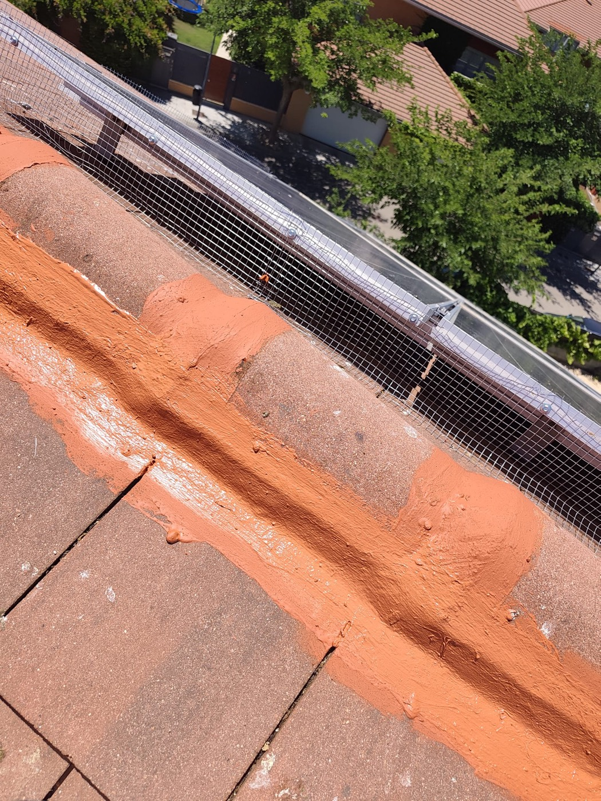

Canalones y bajantes
Instalación, limpieza y reparación de canalones
Canalones de aluminio, cobre o zinc, limpieza de bajantes y reparación de piezas dañadas para que el agua evacúe correctamente y no acabe provocando humedades en fachada o cubierta.
Quiero revisar mis canalones